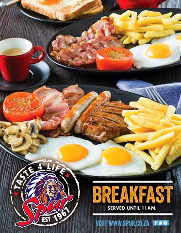

SPUR
Allen Ambor founded Spur Steak Ranches in 1967 when he invested R4 000 to open the Golden Spur in Newlands, Cape Town. He soon opened the second Spur restaurant in South Africa, Seven Spur in Sea Point. With the immense popularity of these branches, Ambor decided that franchising was the best option to grow the Spur business, while enabling others to become part of the Spur Family as franchisees. The group first listed on the travel and leisure sector of the JSE in 1986. A major restructuring of the group was undertaken in 1999, which resulted in the formation and listing of Spur Corporation, as we know it today.
